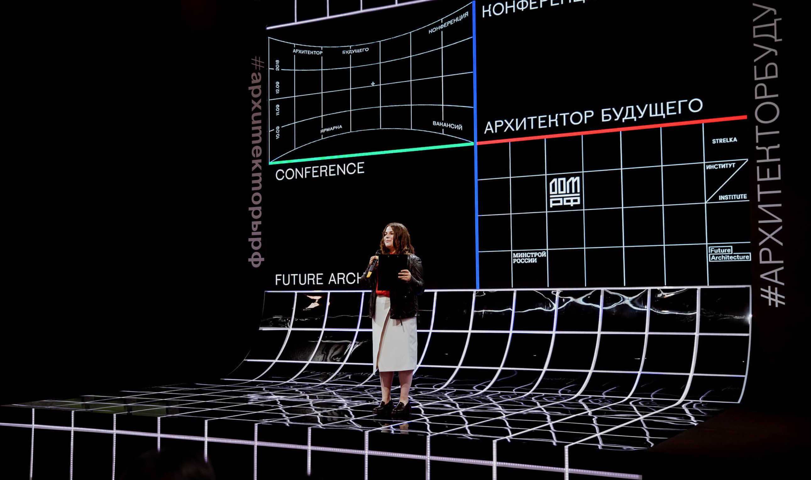
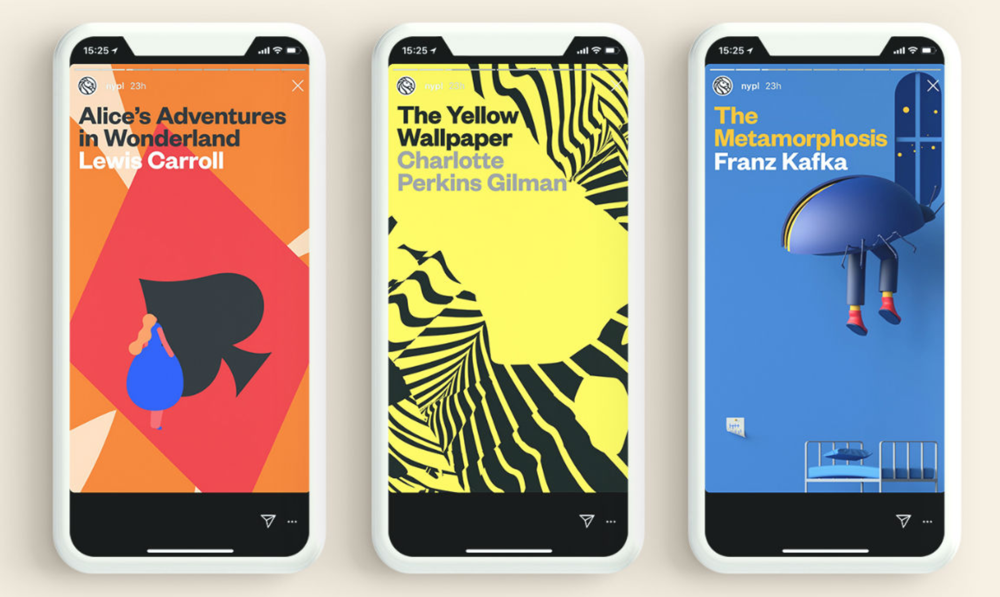
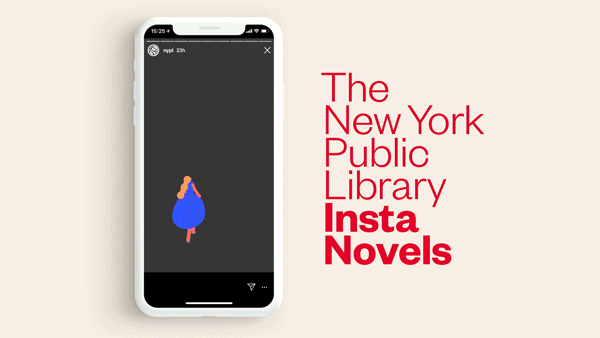
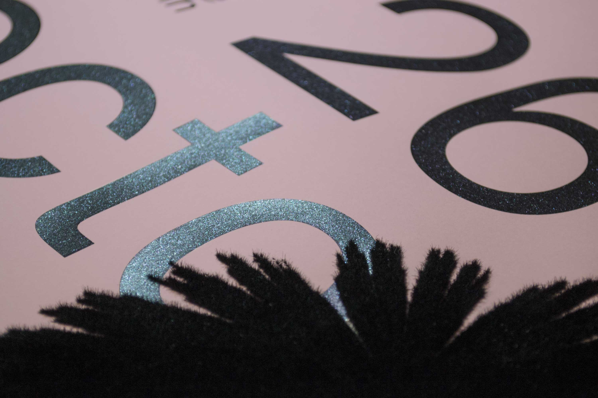

Images + Methods

Future Architects Conference by Ira Ivanova

Future Architects Conference by Ira Ivanova

Insta Novels through NYC Public Library and Buck Design

Insta Novels through NYC Public Library and Buck Design

Balmer Hählen, close-up of Rendez-vous des créateurs 2017. The project won the TDC Prize at Tokyo Type Directors Club 2018.